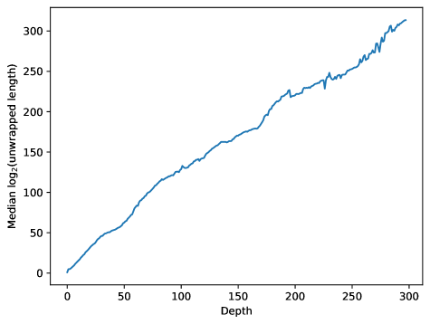

Analyzes Mathlib's Lean 4 library as a proxy for human mathematics, measuring definitional depth and compression.
Abstract
Human mathematics (HM), the mathematics humans discover and value, is a vanishingly small subset of formal mathematics (FM), the totality of all valid deductions. We argue that HM is distinguished by its compressibility through hierarchically nested definitions, lemmas, and theorems. We model this with monoids. A mathematical deduction is a string of primitive symbols; a definition or theorem is a named substring or macro whose use compresses the string. In the free abelian monoid $A_n$, a logarithmically sparse macro set achieves exponential expansion of expressivity. In the free non-abelian monoid $F_n$, even a polynomially-dense macro set only yields linear expansion; superlinear expansion requires near-maximal density. We test these models against MathLib, a large Lean~4 library of mathematics that we take as a proxy for HM. Each element has a depth (layers of definitional nesting), a wrapped length (tokens in its definition), and an unwrapped length (primitive symbols after fully expanding all references). We find unwrapped length grows exponentially with both depth and wrapped length; wrapped length is approximately constant across all depths. These results are consistent with $A_n$ and inconsistent with $F_n$, supporting the thesis that HM occupies a polynomially-growing subset of the exponentially growing space FM. We discuss how compression, measured on the MathLib dependency graph, and a PageRank-style analysis of that graph can quantify mathematical interest and help direct automated reasoning toward the compressible regions where human mathematics lives.
Problem
Human mathematics is a vanishingly small subset of all valid formal deductions. Understanding what distinguishes human mathematics from arbitrary formal derivations could help direct automated reasoning toward productive regions of the search space.
Approach
The authors argue that human mathematics is distinguished by its compressibility through hierarchically nested definitions, lemmas, and theorems. They model this using monoids: in the free abelian monoid, a logarithmically sparse macro set achieves exponential expansion of expressivity, while in the free non-abelian monoid, even a polynomially-dense set yields only linear expansion. They test these models against MathLib, a large Lean 4 library taken as a proxy for human mathematics, measuring depth, wrapped length, and unwrapped length of declarations.
Results
Unwrapped length grows exponentially with both depth and wrapped length in MathLib; wrapped length is approximately constant across all depths. These results are consistent with the abelian monoid model and inconsistent with the non-abelian model, supporting the thesis that human mathematics occupies a polynomially-growing subset of exponentially growing formal mathematics.

Figure 5 . Median \log_{2}(\text{unwrapped length}) versus depth. The approximately linear relationship indicates exponential growth of unwrapped length with depth.